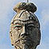

岐阜県
＃352 御首神社
首から上の神様の驚きの由来と奉納物
＃330 迫間不動尊
神仏習合の霊場でみた霊神場分譲システムとカッコよすぎる洞窟＃295 謎の聖徳太子
全てが謎、なぞ、ナゾ。謎がなぞ呼ぶナゾの巨像の正体とは？
＃275 巨大乙姫と稲荷神社
溜池に浮かんだ巨大乙姫と稲荷神社の織りなすコンクリパラダイス
＃274 お千代保稲荷
お札ナシのレギュレーションに対応して出現した新習俗！
そのユルさ、そのヌルさ、全てにおいて超一流だ！
大観音、顔を拝めばあら嬉し
日本一の七福神をつくった名コンビとは・・・
日本一の大天狗と天狗パラダイス
日本三大仏って奈良と鎌倉と・・・あとなんだっけ？
静岡県
＃401 涅槃堂
江戸時代の珍寺は現代に何を語りかけるのやら…
＃265 熱海城/静岡県
＃314 舘山寺
コンクリ大仏黎明期における異色の大観音
＃313 虚空蔵尊
はい！出ましたよ！パワースポット！
箱根の関を超える直前にまで迫っていた浅野帝国勢力！
＃241 首大仏
一見ポンチな大仏さんに隠された壮絶な歴史とは？
マッサージより安いお地蔵さんの役割とは？
爆走する妄想のリアリズム。あの世のバーチャルツアーは凄いぞ！
世界は一つ、人類はみな兄弟、な寺
兵隊さん、プリーズ成仏
東海随一の水子寺は珍物大百貨寺院
隕石パワー全開のトンデモ城
愛知県
＃346 龍台院
お寺の片隅にあったモフモフの正体とは？
＃345 間々観音
おっぱいが〜いっぱい〜、な乳絵馬奉納の牙城
＃297 へちま薬師
溺れる者はへちまをも掴む。あの力士も縋った薬師サマの後利益やいかに。
＃296 桃巌寺(前編） （後編）
大仏が変な色に！そして性神ギャラリーに！
＃294 豊川稲荷
珍寺大道場の原点がここにあったとは！
＃273 浅野祥雲は我々に何を残したのか
大量の作品群は現代に何を語ろうとしているのか？
＃272 密蔵院
のほほんとした境内の片隅に立つ異形の大師像！
＃271 秋葉山円通寺
浅野祥雲師が到達したひとつの極点を見よ！
＃270 犬山成田山
超メジャー寺院にもあった浅野ワールド！
弘法大師と十一面観音のダブル浅野（ふっるう〜）！
＃267 姥子山立弘法
尾張旭の厄除弘法にそっくりな立弘法を発見！
＃266 岩崎御嶽山
浅野聖地の近くにもうひとつの浅野聖地があった？！
この世で見る極楽はグランドキャバレー級の面白さ！
大師ラブ！奇想天外の大師伝説を追体験！
大弘法密集地帯のホットな大師信仰！！
昭和初期の時代を駆け抜けたコンクリ大仏黎明期の偉人伝！
地蔵大ラッシュ状態に圧倒されるべし。
お砂踏みハイキングの最後に待っていた大どんでん返し！
日本一の木像巨大弘法大師の背後には・・・
戦前大仏。内部が面白いぞ！
敦煌チックな塔、地下仏殿、お砂踏み、でも癌封じ
行って来ました。八十八カ所巡りの縁日に！
恐いお顔の大師様にズームイン！
突然現れるコンクリート像の百花繚乱具合にべろんべろんに酔うべし！
迷宮のような回遊式五百羅漢堂はマイ国宝！
驚異の密度！濃すぎる八十八ケ所巡り！
コンクリ大仏の草分け！リスペクト！
仏の大百貨店、ゲップが出るくらい仏像が見られるぞ
変な顔の大仏の裏に回れば・・・
怪しげな大洞窟内に渦巻くエロとグロの響宴,脱力必至
桃太郎は犬山にいた！その証拠の数々とポンチな桃太郎の姿を見よ
貝殻、貝殻、貝殻また貝殻でできた神社＆変なオブジェ
三重県
真剣な思いが込められた掛衣の群れに信仰の極みを見る！
山奥に林立するスカイスクレーパとは！
世界の仏像メガミックス！！
純金ラッシュとニセモノ美術館の「鬼蓄の宴」
珍寺大道場 HOME